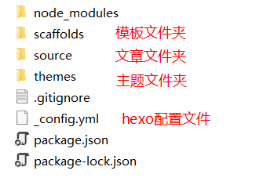
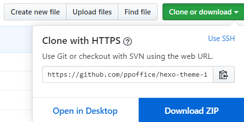
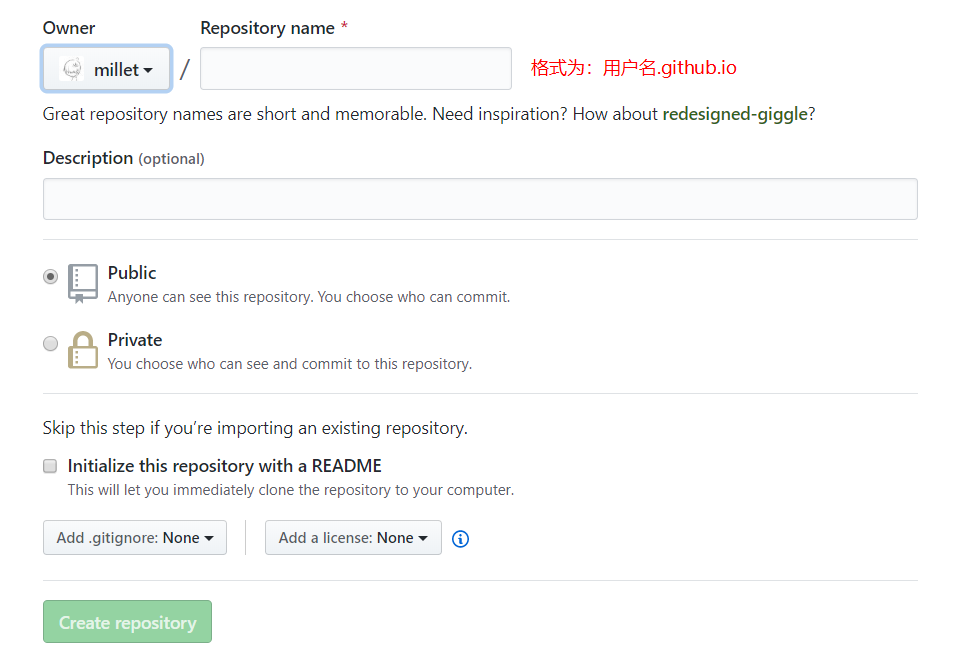
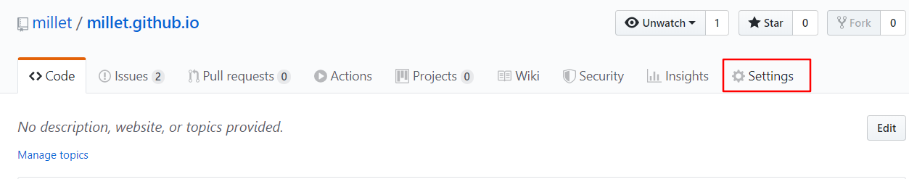
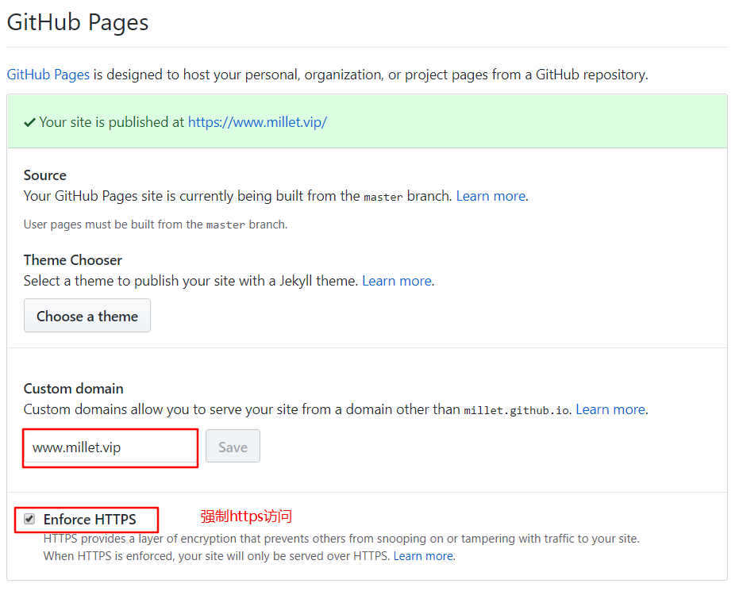

本文记录搭建Hexo博客的过程，以及分享一些经验心得。
安装Git和Node.JS
下载Git和Node.js
Git：https://git-scm.com/download/win
Node.js：https://nodejs.org/zh-cn/download/
安装全部默认设置，一路Next即可。
安装Hexo
下载Hexo
创建好一个文件夹（不要在桌面），右键点击Git Bash Here,输入以下命令
1 | npm install -g hexo-cli |
这个过程没有提示反馈，等待即可，大约1-2分钟即可，如果太久没有反应，【Ctrl+C】停止下载，可以将npm的源更改为淘宝镜像，输入以下命令，再尝试下载Hexo
1 | npm config set registry "https://registry.npm.taobao.org/" |
下载完成后初始化Hexo
1 | hexo init |
完成后在初始化的路径下会有如下文件夹，后面标注对应作用

运行Hexo
使用以下命令生成博客并启动本地浏览
1 | hexo g |
打开 http://localhost:4000 浏览，注意复制链接时不要使用【Ctrl+C】，因为这会停止本地浏览服务
配置Hexo
打开_config.yml，一般需要配置以下参数
1 | # Site |
permalink设置尽量短一些不含中文，并且可以设置一个urlname参数加html后缀，方便以后在文章头部设置该属性，实现自定义文章的url
下载主题
这里使用的icarus主题
https://github.com/ppoffice/hexo-theme-icarus
根据说明页，使用命令下载
1 | git clone https://github.com/ppoffice/hexo-theme-icarus.git themes/icarus |
或直接下载ZIP包

将下载的文件解压，复制到/theme/中,主题文件夹过长可以重命名为icarus，然后修改Hexo配置文件_config.yml中的themes参数
1 | theme: icarus #主题 |
重新使用命令即可本地预览效果
1 | hexo g |
其他主题可以在GitHub上搜索hexo-theme
https://github.com/search?q=hexo-theme
配置GitHub
创建仓库
登录GitHub账号后，打开 https://github.com/new 页面创建仓库，参数默认即可，注意仓库名称一定要符合 用户名.github.io 的格式

创建SSH key
输入命令（注意有引号），敲三下回车即可
1 | ssh-keygen -t rsa -C "邮箱地址" |
之后在电脑用户目录如 C:\Users\Millet\.ssh下生成了id_rsa和id_rsa.pub两个文件
将id_rsa.pub文件中的内容复制，打开GitHub个人设置 SSH and GPG keys，点击New SSH key，粘贴到Key里面，标题随便取
输入命令，绑定GitHub账户
1 | git config --global user.email "邮箱地址" |
测试连接
1 | ssh -T git@github.com |
提示 You’ve successfully authenticated ，表明已经成功连接
部署Hexo到GitHub
安装部署插件
1 | npm install hexo-deployer-git --save |
修改Hexo配置文件_config.yml
1 | # Deployment |
开始部署
1 | hexo g |
等待一会，打开 https://用户名.github.io 即可看到效果
绑定域名
1.在自己域名管理面板中添加CNAME记录，主机头为：www，值为：用户名.github.io
2.在Hexo的\source\目录下创建一个CNAME.txt,输入你的域名，然后将txt后缀删除
3.使用hexo g及hexo d部署到GitHub
4.在GitHub仓库设置中,输入域名，开启SSL证书(注意必须要二级域名才能开启，不带主机头顶级域名无法开启)


主题配置
主题参数配置
导航栏显示及个人信息控件修改
打开/themes/icarus/_config.yml，修改以下参数
1 | navbar: |
文章显示修改
1 | article: #文章显示 |
控件位置修改
配置文件中的控件代码先后顺序决定了网页中两栏控件的先后顺序
1 | - |
删除控件
如果需要去掉某个控件，那么可以在控件代码前加#，注意分割的符号 - 也要注释
当然也可以直接删除代码
1 | # - |
控件固定
修改以下false为true可以让控件不随滚动条滚动
1 | sidebar: |
主题美化
icarus这款主题为全局三栏显示，这样浏览文章时显得过于拥挤（宽屏显示器跳过），所以搜索了一下，如何让文章页拓宽一点，少显示些控件，最后找到了下面这篇帖子
Icarus 主题自定义 https://www.alphalxy.com/2019/03/customize-icarus/
按照文章中的步骤配置即可，但是我测试后发现PC端成功改成了两栏，移动端布局错乱了，后面还是用了这位大佬的现成配置文件。
使用方法：下载ZIP包，解压到Hexo的theme文件即可，按照上文的方法修改为自己的参数
底部访问量及运行时间修改
修改\themes\icarus\layout\common\footer.ejs 文件，将原来只显示人数的span标签删除，添加以下代码
1 | <span id="busuanzi_container_site_uv"> 来访 <span id="busuanzi_value_site_uv"></span>人</span> |
再修改icarus配置文件，打开busuanzi统计
1 | busuanzi: true |
插件
暂时未使用太多插件，觉得博客简洁点好，不能花里胡哨，有空再弄吧 ╮(￣▽￣)╭
评论及分享
参考icarus官方文章
https://blog.zhangruipeng.me/hexo-theme-icarus/categories/Plugins/Comment/
https://blog.zhangruipeng.me/hexo-theme-icarus/categories/Plugins/Share/
常见问题
修改配置或文章后浏览或部署到GitHub却未改变：
1.尝试清理浏览器缓存
2.使用hexo clean，删除生成的缓存，再重新hexo g
3.删除部署到GitHub的缓存文件夹.deploy_git，重新生成及部署
文章格式
文章头部
1 | --- |
可以将文章头部保存到\scaffolds\post.md模板中，下次使用hexo n生成文章自带头部
thumbnail参数可以填网址，也可以自己在\source\下创建一个images文件夹，将图片01.jpg放入，之后将thumbnail设置为/images/01.jpg即可调用